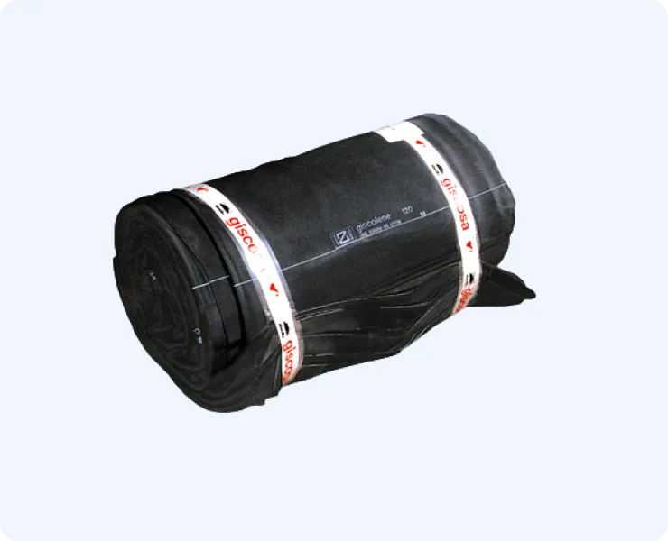

Плёнка для пруда
Плёнка бутилкаучук, 2.0мм, рулон 1,5*20м, черный
Цена и наличие
- 1 шт.92,5 BYN / м²В наличии
Данные на 23.11.2026.
Характеристики
- Производитель
- Firestone
- Материал
- бутилкаучук
- Длина рулона, м
- 20
- Толщина, мм
- 2
- Ширина рулона, м
- 1,5
- Длина рулона
- 20 м
- Максимальный срок эксплуатации, лет
- 50
- Страна производитель
- Испания
- Цвет
- черный
Описание
Цена указана за м²
ВЫСОКОКАЧЕСТВЕННАЯ БУТИЛКАУЧУКОВАЯ ПЛЕНКА FIRESTONE, ИСПАНИЯ, 2,0ММ, ШИРИНА 1,5 МЕТРА, ЗА М,КВ, EPDM мембрана Giscosa (Giscolene®) представляет собой двухслойную водонепроницаемую пленку из высококачественного синтетического каучука (EPDM) и обладает уникальными свойствами. Ее гидроизоляционные качества позволяют строить водоемы со сроком службы более 40 лет. Многие каучуковые покрытия с похожими характеристиками не гарантированы от протекания по заводским швам, так как не имеют второго подстраховочного слоя. Каучуковая пленка для водоема фирмы Giscosa – это эластичность (растяжение до 300%), прочность (пруды, построенные более чем 100 лет назад фирмой Giscosa функционируют и по сей день), простота работ по оформлению. Бутилкаучуковая пленка Giscosa легка в обращении, поэтому ее может уложить даже любитель без привлечения бригады профессионалов. Материал благоприятен для водной среды, для рыб и растений, защищен от вредного влияния ультрафиолета и водорослей. Технология склеивания создает эффект сваривания пленки в один кусок. Но клеить приходится редко, т.к. ширина одного сплошного куска пленки может достигать 1000 м.кв.! Благодаря качеству и долговечности пленки, однажды приложив усилия, Вы сможете наслаждаться своим творением всю жизнь. Самое приятное, что весь комплекс работ по устройству водоема вы сможете провести самостоятельно. Бутилкаучуковой пленке Giscosa (Giscolene®) легко придать необходимую форму во время укладки. Важно, что в последствии это форму можно с легкостью изменить. Пленка легко переносит перепады температуры. Ее можно класть и склеивать даже зимой. Проекты с применением EPDM мембраны Giscosa (Giscolene®) имеют множество преимуществ и реализованы в более чем в 1000 прудах по всему миру.
Применение
ПЛЕНКА ДЛЯ ВОДОЕМОВ, ПРИМЕНЕНИЕ: Коммерческие и парковые водоемы Каналы, реки, ручьи Пруды для разведения рыбы Водоемы для купания, бассейны Гольф клубы Резервуары для питьевой воды Оросительные резервуары Пожарные водоемы Компостные ямы Навозохранилища Резервуары для искусственного снега Гидроизоляция колодцев Гидроизоляция кровель, фундаментов, мостов
Преимущества
Преимущества плёнки для водоемов Giscosa (Giscolene®): Высокая эластичность и растяжимость Мембрана EPDM Giscosa (Giscolene) растягивается более чем в 3 раза (300%) и остаётся высокоэластичной даже при низких температурах, до -45 С. Это позволяет применять её круглогодично в любых климатических зонах. Благодаря высокой растяжимости пленка запросто укладывается под наклоном в соответствии с рельефом дна водоема Герметичность швов геомембрана Giscosa (Giscolene®) имеет двухслойную структуру, благодаря чему эта плёнка обеспечивает высочайшую герметичность швов по сравнению с другими материалами Быстрота и лёгкость установки плёнка для водоема Giscosa (Giscolene®) благодаря большому размеру заводских рулонов, 15 м шириной и 30 м длиной, значительно сокращает время её укладки и уменьшает затраты труда Простота обслуживания булилкаучуковая мембрана не требует большого и регулярного обслуживания после её укладки Экологическая чистота плёнка для искусственных водоемов Giscosa (Giscolene®) представляет собой инертный нетоксичный материал, что подтверждено сертификатом ISO 14001